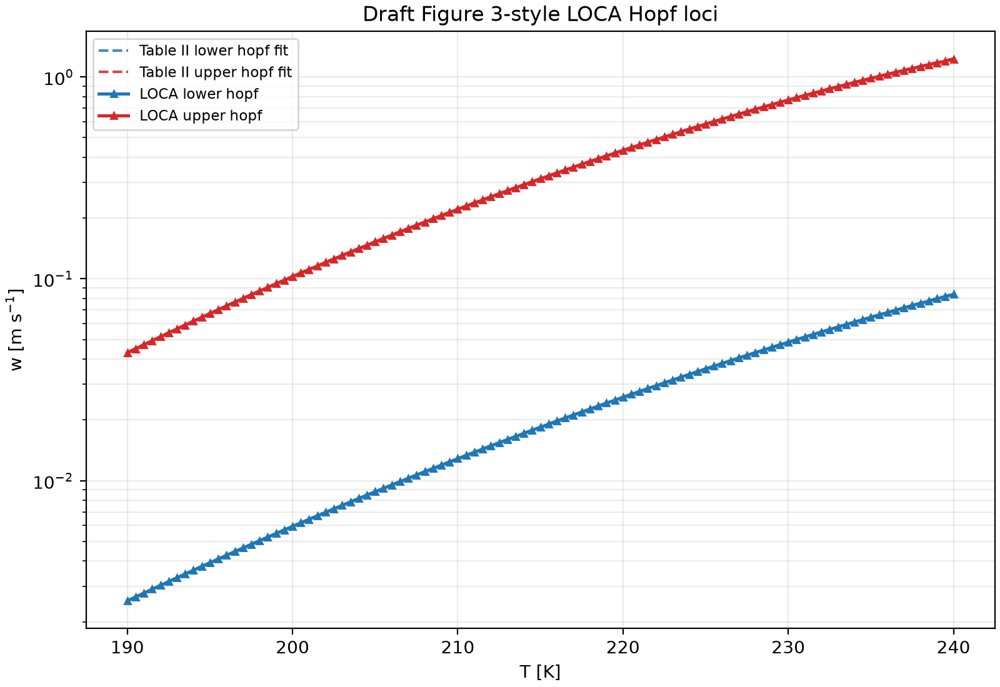

Moore–Spence Hopf continuation in NOX/LOCA
This slideshow explains the mathematics behind the native LOCA Hopf continuation used for Figure 3: what equations are solved, why the system is augmented, how one Hopf point becomes a Hopf curve, and how the Episode 6 variables map onto that formulation.
A curve of equilibria where a complex-conjugate eigenvalue pair crosses the imaginary axis.
state, Hopf parameter, eigenvector real/imaginary parts, and frequency.
Temperature T is the curve coordinate; log_w is solved as the Hopf bifurcation parameter.
No software-build details are included; references are only to clarify the mathematical implementation.
Hopf continuation starts from an ODE equilibrium problem
The physical model is a three-dimensional autonomous ODE for ice number, ice mass, and saturation ratio:
For Episode 6:
- physical state: \(u=(n,q,s)\),
- Hopf solve parameter: \(\mu = \log w\),
- locus/continuation coordinate: \(\eta = T\),
- fixed controls: pressure \(p=300\,\mathrm{hPa}\), sedimentation factor \(F=1\), aerosol concentration \(N_a\), and box depth \(\Delta z\).
Equilibrium condition
A point on any equilibrium branch satisfies:
A Hopf point is a special equilibrium where the Jacobian \(f_u\) has a purely imaginary eigenvalue pair.
LOCA solves in log-state coordinates, but audits in physical coordinates
The C++ LOCA residual uses the internal state
and the residual
This preserves positivity for \(n\) and \(q\), and improves numerical scaling.
For scientific interpretation, each corrected point is converted back to
and the physical ODE Jacobian \(f_u(u;w,T)\) is used for reported eigenvalues.
A Hopf point is an equilibrium plus a critical oscillatory mode
Write the complex eigenvector as \(v=y+i z\), with real vectors \(y,z\). Splitting real and imaginary parts gives:
3 equations: \(F=0\).
6 equations: real and imaginary eigenvector equations.
\(\omega\) is an unknown, not a post-processing value.
The ordinary equilibrium equation does not isolate the bifurcation
If we only solve \(F(x,\mu;\eta)=0\), we get an equilibrium surface. Most points are not Hopf points. Moore–Spence augments the unknown vector so the nonlinear solve lands directly on the Hopf condition.
For a 3-variable state, this has:
| Unknown block | Dimension | Meaning |
|---|---|---|
| \(x\) | 3 | equilibrium state in log coordinates |
| \(y\) | 3 | real part of critical eigenvector |
| \(z\) | 3 | imaginary part of critical eigenvector |
| \(\omega\) | 1 | Hopf angular frequency |
| \(\mu=\log w\) | 1 | bifurcation parameter solved by LOCA |
Total: 11 unknowns at each fixed temperature \(T\).
The square nonlinear system solved at each temperature
At a fixed \(\eta=T\), LOCA solves a square augmented system:
Why two extra equations?
Eigenvectors have arbitrary scale and phase. Without normalization, the eigenvector equations are underdetermined.
What is \(\ell\)?
A fixed length/phase normalization vector. Episode 6 chooses it from the initial real eigenvector so the first constraint is well-conditioned.
The augmented system is exactly determined
| Equation block | Count | Role |
|---|---|---|
| \(F=0\) | 3 | must remain an equilibrium |
| \(F_x y+\omega z=0\) | 3 | real part of \(F_x(y+iz)=i\omega(y+iz)\) |
| \(F_x z-\omega y=0\) | 3 | imaginary part of the same eigenproblem |
| \(\ell^T y-1=0\) | 1 | fixes eigenvector length / scale |
| \(\ell^T z=0\) | 1 | fixes eigenvector phase |
| Total | 11 | matches 11 unknowns |
Newton needs derivatives of the whole Moore–Spence system
NOX applies Newton’s method to \(G(Y;T)=0\). The linearization contains familiar blocks:
\(d(F_x y + \omega z) = (dF_x)y + F_x dy + d\omega\,z + \omega dz\)
\(d(F_x z - \omega y) = (dF_x)z + F_x dz - d\omega\,y - \omega dy\)
The terms \((dF_x)y\) and \((dF_x)z\) encode second-derivative information of the residual. LOCA’s Moore–Spence implementation manages this extended linear algebra around the base group supplied by Episode 6.
For Episode 6, \(\mu=\log w\) is solved at each \(T\)
At each temperature, the Moore–Spence system treats \(\mu=\log w\) as an unknown. LOCA adjusts \(\mu\) until the equilibrium at that temperature is exactly Hopf.
Why not use \(w\) directly?
The physical vertical velocity spans orders of magnitude. Solving for \(\log w\) makes continuation steps more uniform and avoids positivity constraints on \(w\).
Continuation repeats prediction and correction along temperature
The continuation coordinate is temperature, not arclength. The C++ driver chooses a sequence of temperatures and asks Moore–Spence to solve the Hopf equations at each one.
The predictor supplies a good initial guess for Newton
The corrected augmented vector at one temperature is:
For subsequent steps, Episode 6 uses extrapolation from the previous corrected points:
For the first continuation step, there is not yet a secant direction. Episode 6 therefore uses a constant predictor:
If that first Moore–Spence Newton correction fails, the attempted temperature step is halved and retried. Once two corrected points exist, the ordinary secant predictor above is used.
The complex eigenpair is converted into real unknown blocks
Before a Moore–Spence correction, Episode 6 computes an eigenpair of the current residual Jacobian:
The code selects the eigenvalue with positive imaginary part, splits the eigenvector into \(y\) and \(z\), rotates it to improve orthogonality, chooses a stable sign convention, and normalizes it.
| Operation | Mathematical reason |
|---|---|
| Pick positive-imaginary eigenvalue | use one representative of the conjugate pair |
| Split \(v=y+iz\) | Moore–Spence is real-valued |
| Rotate \((y,z)\) | eigenvectors are phase-arbitrary; rotation improves conditioning |
| Normalize | matches the scale/phase constraints |
The same equations generate lower and upper Hopf loci
Seeded near \(T=230K\), \(w\approx0.048531\,m\,s^{-1}\). The algorithm solves \(G=0\) while marching toward both lower and higher temperatures.
Seeded near \(T=230K\), \(w\approx0.768680\,m\,s^{-1}\), with a high-temperature endpoint seed for the upward segment.
Mathematically, these are distinct connected components of the Hopf set in the \((T,w)\) plane. Both satisfy the same Moore–Spence equations; only the seed and branch-following path differ.
Solving the bifurcation equations avoids ambiguous eigenvalue sign scans
Scan/interpolation approach
- solve equilibria over a grid;
- compute eigenvalues afterwards;
- infer where real part crosses zero;
- accuracy depends on grid density and branch tracking.
Moore–Spence approach
- equilibrium and eigenpair conditions solved simultaneously;
- \(\mu=\log w\) adjusted as part of Newton;
- frequency and eigenvectors are unknowns;
- outputs are directly Hopf-constrained points.
Each row is a corrected Hopf point plus diagnostic evidence
| Output field | Mathematical meaning |
|---|---|
T_K | fixed continuation coordinate \(\eta\) |
log_w, w_m_s | solved bifurcation parameter \(\mu\) and physical velocity \(e^\mu\) |
log_n, log_q, s | corrected equilibrium state \(x\) |
hopf_frequency | \(\omega\) from the Moore–Spence extended vector |
eigenvalue_real | audit value; should be close to zero for the crossing pair |
residual_norm | norm of equilibrium residual after correction |
The mathematical output is a pair of curves in the \(T\)–\(w\) plane

Each plotted LOCA point is a solution of the Moore–Spence augmented system at its displayed temperature.
- Lower branch: smaller vertical velocities.
- Upper branch: larger vertical velocities.
- Both are Hopf boundaries of the equilibrium stability structure.
Moore–Spence turns “find where eigenvalues cross” into “solve this larger real system”
The state remains on the model’s steady-state manifold.
The critical eigenpair is represented by real vectors \(y,z\) and frequency \(\omega\).
Temperature is stepped, and \(\log w\) is corrected to keep the point exactly Hopf.
That is the mathematical heart of Episode 6’s NOX/LOCA backend.